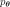
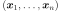
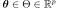
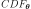
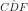
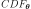
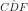
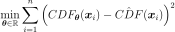

LeastSquaresDistributionFactory¶
- class LeastSquaresDistributionFactory(*args)¶
Least squares factory.
- Parameters
- distribution
Distribution The distribution defining the parametric model  to be adjusted to data.
- distribution
See also
Notes
Implements generic least-squares estimation.
Let us denote  the sample, the particular distribution of probability density function we want to fit to the sample, and  its the parameter vector.
The parameters
 are numerically optimized so as the
parametric  gets close enough to the empirical :
are numerically optimized so as the
parametric  gets close enough to the empirical :
Examples
>>> import openturns as ot >>> ot.RandomGenerator.SetSeed(0) >>> distribution = ot.Normal(0.9, 1.7) >>> sample = distribution.getSample(10) >>> factory = ot.LeastSquaresDistributionFactory(ot.Normal()) >>> inf_distribution = factory.build(sample)
Methods
build(*args)Build the distribution.
buildEstimator(*args)Build the distribution and the parameter distribution.
Accessor to the bootstrap size.
Accessor to the object's name.
getId()Accessor to the object's id.
Accessor to the known parameters indices.
Accessor to the known parameters indices.
getName()Accessor to the object's name.
Accessor to the solver.
Accessor to the optimization bounds.
Accessor to the object's shadowed id.
Accessor to the object's visibility state.
hasName()Test if the object is named.
Test if the object has a distinguishable name.
setBootstrapSize(bootstrapSize)Accessor to the bootstrap size.
setKnownParameter(values, positions)Accessor to the known parameters.
setName(name)Accessor to the object's name.
setOptimizationAlgorithm(solver)Accessor to the solver.
setOptimizationBounds(optimizationBounds)Accessor to the optimization bounds.
Accessor to the optimization inequality constraint.
setShadowedId(id)Accessor to the object's shadowed id.
setVisibility(visible)Accessor to the object's visibility state.
- __init__(*args)¶
- build(*args)¶
Build the distribution.
Available usages:
build(sample)
build(param)
- Parameters
- sample2-d sequence of float
Sample from which the distribution parameters are estimated.
- paramCollection of
PointWithDescription A vector of parameters of the distribution.
- Returns
- dist
Distribution The built distribution.
- dist
- buildEstimator(*args)¶
Build the distribution and the parameter distribution.
- Parameters
- sample2-d sequence of float
Sample from which the distribution parameters are estimated.
- parameters
DistributionParameters Optional, the parametrization.
- Returns
- resDist
DistributionFactoryResult The results.
- resDist
Notes
According to the way the native parameters of the distribution are estimated, the parameters distribution differs:
Moments method: the asymptotic parameters distribution is normal and estimated by Bootstrap on the initial data;
Maximum likelihood method with a regular model: the asymptotic parameters distribution is normal and its covariance matrix is the inverse Fisher information matrix;
Other methods: the asymptotic parameters distribution is estimated by Bootstrap on the initial data and kernel fitting (see
KernelSmoothing).
If another set of parameters is specified, the native parameters distribution is first estimated and the new distribution is determined from it:
if the native parameters distribution is normal and the transformation regular at the estimated parameters values: the asymptotic parameters distribution is normal and its covariance matrix determined from the inverse Fisher information matrix of the native parameters and the transformation;
in the other cases, the asymptotic parameters distribution is estimated by Bootstrap on the initial data and kernel fitting.
- getBootstrapSize()¶
Accessor to the bootstrap size.
- Returns
- sizeinteger
Size of the bootstrap.
- getClassName()¶
Accessor to the object’s name.
- Returns
- class_namestr
The object class name (object.__class__.__name__).
- getId()¶
Accessor to the object’s id.
- Returns
- idint
Internal unique identifier.
- getKnownParameterIndices()¶
Accessor to the known parameters indices.
- Returns
- indices
Indices Indices of fixed parameters.
- indices
- getKnownParameterValues()¶
Accessor to the known parameters indices.
- Returns
- values
Point Values of fixed parameters.
- values
- getName()¶
Accessor to the object’s name.
- Returns
- namestr
The name of the object.
- getOptimizationAlgorithm()¶
Accessor to the solver.
- Returns
- solver
OptimizationAlgorithm The solver used for numerical optimization of the likelihood.
- solver
- getOptimizationBounds()¶
Accessor to the optimization bounds.
- Returns
- problem
Interval The bounds used for numerical optimization of the likelihood.
- problem
- getShadowedId()¶
Accessor to the object’s shadowed id.
- Returns
- idint
Internal unique identifier.
- getVisibility()¶
Accessor to the object’s visibility state.
- Returns
- visiblebool
Visibility flag.
- hasName()¶
Test if the object is named.
- Returns
- hasNamebool
True if the name is not empty.
- hasVisibleName()¶
Test if the object has a distinguishable name.
- Returns
- hasVisibleNamebool
True if the name is not empty and not the default one.
- setBootstrapSize(bootstrapSize)¶
Accessor to the bootstrap size.
- Parameters
- sizeinteger
Size of the bootstrap.
- setKnownParameter(values, positions)¶
Accessor to the known parameters.
- Parameters
- valuessequence of float
Values of fixed parameters.
- indicessequence of int
Indices of fixed parameters.
Examples
>>> import openturns as ot >>> ot.RandomGenerator.SetSeed(0) >>> distribution = ot.Beta(2.3, 4.5, -1.0, 1.0) >>> sample = distribution.getSample(10) >>> factory = ot.LeastSquaresDistributionFactory(ot.Beta()) >>> # set (a,b) out of (r, t, a, b) >>> factory.setKnownParameter([-1.0, 1.0], [2, 3]) >>> inf_distribution = factory.build(sample)
- setName(name)¶
Accessor to the object’s name.
- Parameters
- namestr
The name of the object.
- setOptimizationAlgorithm(solver)¶
Accessor to the solver.
- Parameters
- solver
OptimizationAlgorithm The solver used for numerical optimization of the likelihood.
- solver
- setOptimizationBounds(optimizationBounds)¶
Accessor to the optimization bounds.
- Parameters
- problem
Interval The bounds used for numerical optimization of the likelihood.
- problem
- setOptimizationInequalityConstraint(optimizationInequalityConstraint)¶
Accessor to the optimization inequality constraint.
- Parameters
- inequalityConstraint
Function The inequality constraint used for numerical optimization of the likelihood.
- inequalityConstraint
- setShadowedId(id)¶
Accessor to the object’s shadowed id.
- Parameters
- idint
Internal unique identifier.
- setVisibility(visible)¶
Accessor to the object’s visibility state.
- Parameters
- visiblebool
Visibility flag.